Warning: package 'factoextra' was built under R version 4.4.2Warning: package 'caret' was built under R version 4.4.220582 - Análisis de Datos para el GMAT
Enlace al repositorio de Github
Warning: package 'factoextra' was built under R version 4.4.2Warning: package 'caret' was built under R version 4.4.2Una empresa de comercio busca identificar segmentos de clientes según sus patrones de compra. Para ello, se dispone de un conjunto de datos ficticio denominado data_comercio.csv. Este conjunto de datos incluye información sobre la identificación del cliente, la categoría de las compras realizadas, el importe gastado en euros, el número de artículos adquiridos y la fecha de la última compra. La tarea consiste en realizar una segmentación de clientes utilizando métodos de clustering jerárquicos con diferentes enlaces y distancias.
Deberéis presentar visualizaciones de los agrupamientos obtenidos con cada método y comparar las diferencias entre ellos, destacando las ventajas y desventajas de cada enfoque. Además, se espera un análisis de las características principales de cada clúster, identificando, por ejemplo, a los clientes con mayor gasto promedio, el número promedio de artículos comprados por grupo y otras características relevantes. Finalmente, con base en los segmentos identificados, se deben proponer recomendaciones estratégicas para diseñar campañas de marketing dirigidas específicamente a cada segmento.
Cargamos y visualizamos el conjunto de datos. Eliminamos el identificador y filtramos las variables numéricas.
Rows: 200
Columns: 4
$ categoria <fct> Alimentos, Alimentos, Ropa, Ropa, Alimentos, Juguetes,…
$ importe_gastado <dbl> 178.83, 382.01, 425.32, 191.42, 271.65, 363.82, 338.66…
$ num_articulos <int> 8, 2, 5, 2, 6, 10, 10, 9, 7, 6, 3, 8, 7, 4, 8, 3, 8, 6…
$ ultima_compra <date> 2022-08-08, 2023-11-23, 2022-08-10, 2023-05-22, 2023-…Analicemos nuestro conjunto de datos, que consta de 200 observaciones y 5 variables:
cliente_id: Es una variable utilizada como identificador único para cada muestra. Los nombres se construyen siguiendo un formato específico: la letra “C” seguida por un número que corresponde al número de la muestra.categoria: Es una variable cualitativa que clasifica a los individuos según el tipo de compra que han realizado. En la siguiente tabla se presentan las categorías disponibles junto con la cantidad de observaciones correspondientes a cada una:
Alimentos Electrónica Hogar Juguetes Ropa
37 46 34 43 40 importe_gastado: Es una variable cuantitativa continua que representa el importe gastado, expresado en euros.num_articulos: Es una variable cuantitativa discreta que representa el número de articulos comprados.ultima_compra: Es una variable de tipo fecha. Nos indica la fecha de la ultima compra.Representamos con ggpairs la relación entre las tres variables importe_gastado, num_articulos y categoria.
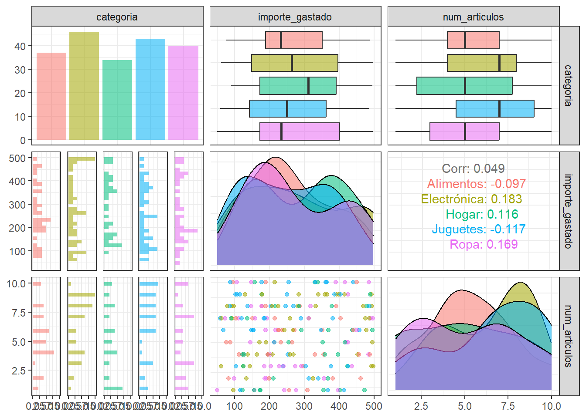
El gráfico no nos da mucha información porque no hay diferencias globales evidentes entre las 5 categorías. En particular, las cajas de los boxplot se solapan, aunque podemos ver las categorías distinguidas según su mediana del número de artículos.
Visualizemos con más detalle el gráfico de puntos de las variables importe_gastado y num_articulos según la categoria:
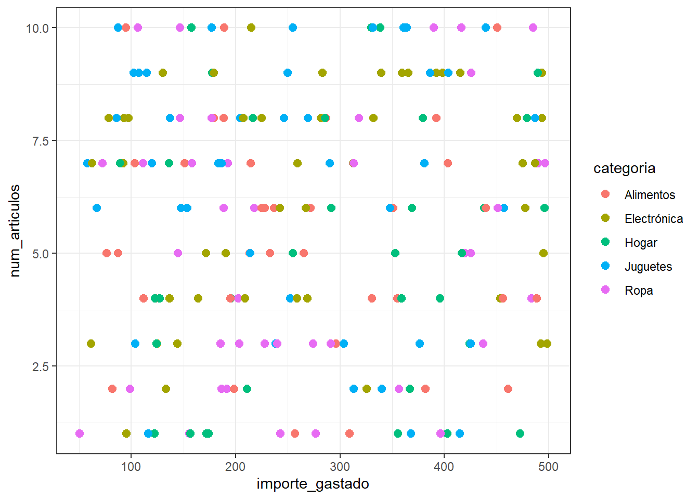
Los puntos de colores están mezclados. No es evidente una partición de los puntos por estas 5 categorías.
Observamos ahora las medianas de los datos por cada categoría:
# A tibble: 5 × 3
categoria mediana_importe mediana_articulos
<fct> <dbl> <dbl>
1 Alimentos 233. 5
2 Electrónica 263. 7
3 Hogar 311. 5
4 Juguetes 250. 7
5 Ropa 234. 5Según el número de artículos se evindencian 2 clusters: uno con mediana \(5\) formado por las categorías alimentos, hogar y ropa y el otro con mediana igual a \(7\) formado por electrónica y juguetes.
Según el importe de gasto, podemos separar en 3 clusters: el de importe más alto el hogar, el siguiente más alto electrónica y juguetes y el de menor importe de gasto alimentación y ropa.
Por el método del codo, decidimos el número de clusters según dónde está el pliegue principal.
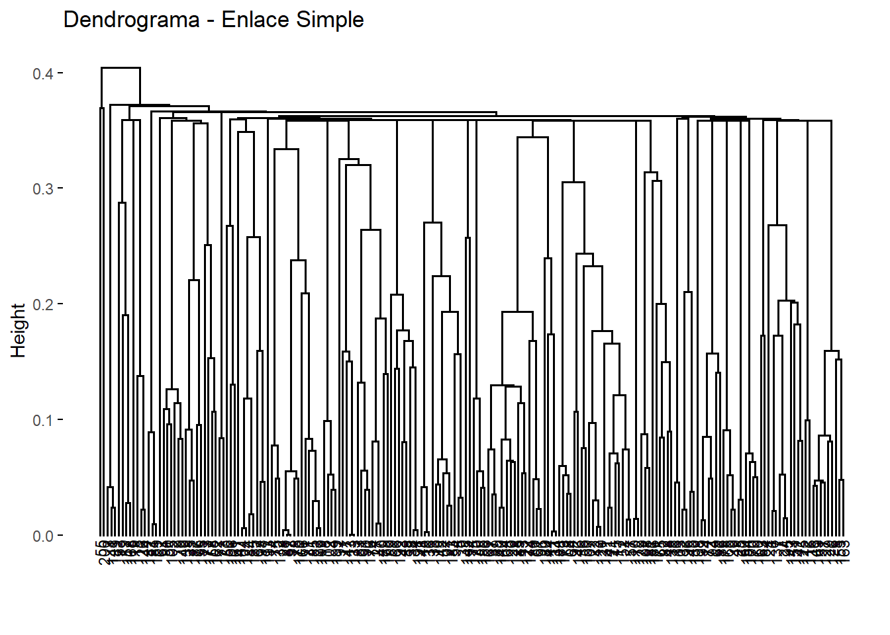
Por lo tanto, tomamos \(k=3\) y tenemos tres clusters. Entonces veremos si podemos interpretar los clusters según una clasificación con sentido.
Como la magnitud de los valores difiere notablemente entre variables, las escalamos.
raw_data_numeric <- scale(raw_data_numeric, center = TRUE, scale = TRUE)Apliquemos métodos de clustering jerárquico aglomerativo. Para ello debemos escoger una medida de distancia y un tipo de enlace. Veamos los casos estudiados:
En este caso, empleamos la función hclust(), a la que se pasa como argumento una matriz de distancia euclidea y el tipo de enlace. Se comparan los resultados con los enlaces simple, completo, medio y de Ward:
# Matriz de distancias
matriz_distancias <- dist(raw_data_numeric, method = "euclidean")
# Fijamos semilla
set.seed(123)
hc_euclidea_simple <- hclust(d = matriz_distancias, method = "single")
hc_euclidea_completo <- hclust(d = matriz_distancias, method = "complete")
hc_euclidea_medio <- hclust(d = matriz_distancias, method = "average")
hc_euclidea_ward <- hclust(d = matriz_distancias, method = "ward.D2")Representemos los dendogramas:
Pintando \(k=3\):
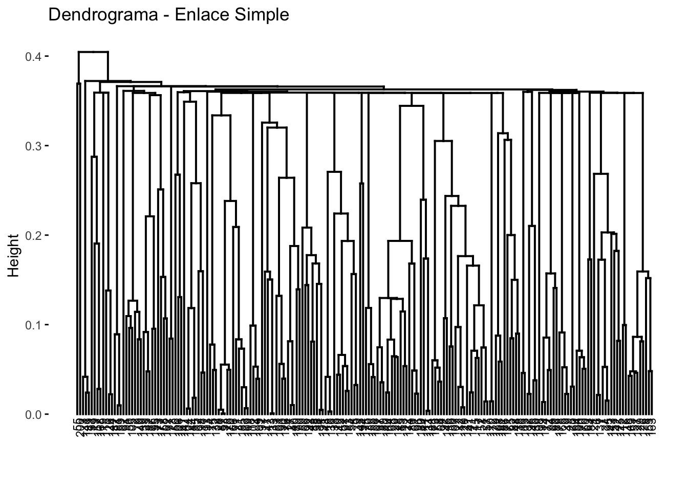
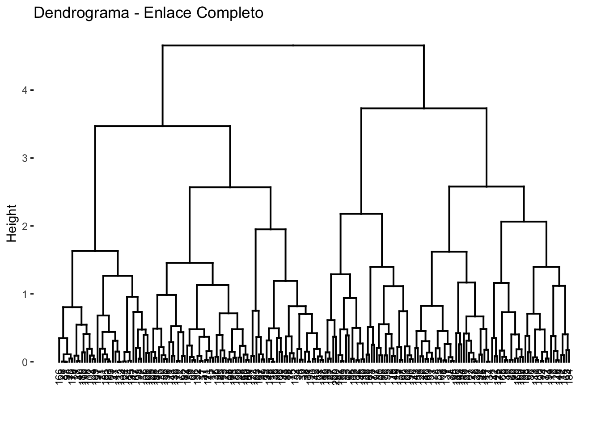
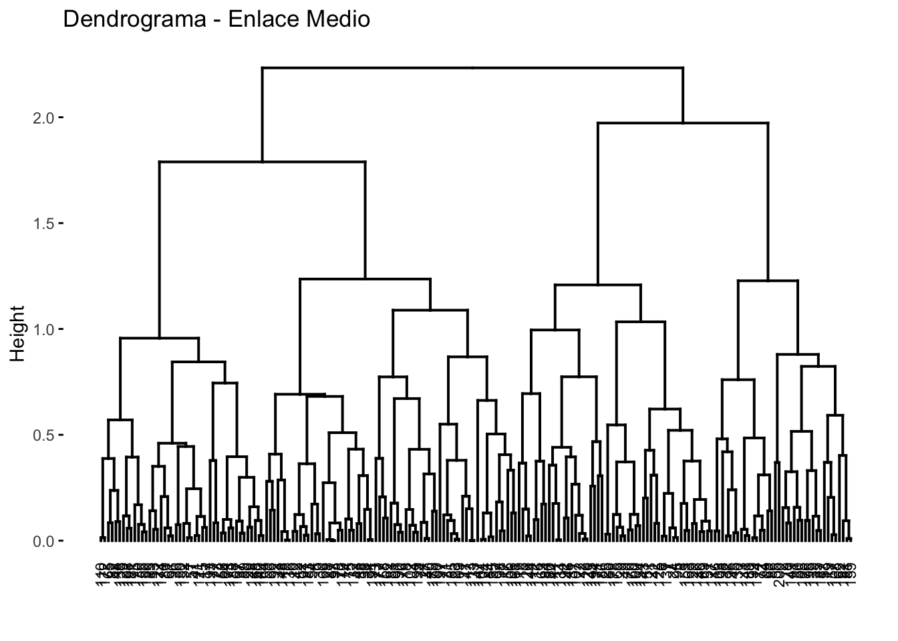
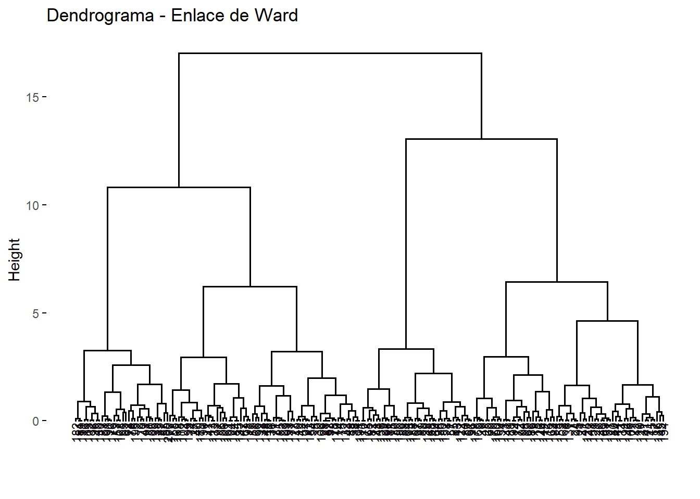
El método del codo indica que consideremos que existen 3 grupos en la población. Evaluemos ahora que enlace consigue los mejores resultados. En este caso, los cuatro tipos identifican 3 clusters pero son claramente distintos en cuanto al número de obervaciones que contiene cada cluster. Además, sabemos que no tiene por qué ser cierto que en los 4 dendrogramas los clusters estén formados por exactamente las mismas observaciones.
Evaluemos hasta qué punto su estructura refleja las distancias originales entre observaciones con el coeficiente de correlación entre las distancias cophenetic del dendrograma (altura de los nodos) y la matriz de distancias original:
cor(x = matriz_distancias, cophenetic(hc_euclidea_simple))[1] 0.3379576cor(x = matriz_distancias, cophenetic(hc_euclidea_completo))[1] 0.6481864cor(x = matriz_distancias, cophenetic(hc_euclidea_medio))[1] 0.6561439cor(x = matriz_distancias, cophenetic(hc_euclidea_ward))[1] 0.6267467Cuanto más cercano es el valor a 1, mejor refleja el dendrograma la verdadera similitud entre las observaciones. En este caso, el método de enlace medio consigue representar ligeramente mejor la similitud entre observaciones, seguido por el enlace completo y el de Ward. En este caso, el enlace simple es el que da peores resultados.
Ahora tenemos que decidir a qué altura cortamos para generar los clusters. La función cutree() nos devuelve el cluster al que se ha asignado cada observación dependiendo del número de clusters especificado.
[1] 1 2 2 1 1 3 3 3 3 1 1 3 1 1 1 2 1 1 2 1 3 3 1 3 3 3 1 1 3 1 1 2 1 1 2 1 1
[38] 1 1 1 1 3 1 3 2 3 1 1 3 2 3 1 2 1 2 1 1 1 1 3 1 2 3 1 1 1 1 1 2 3 1 2 1 1
[75] 1 2 1 1 2 1 2 1 1 1 1 2 1 1 1 1 2 3 1 2 3 1 1 1 2 3 1 1 2 1 2 1 3 1 1 1 3
[112] 3 1 2 3 3 1 1 3 3 1 1 1 1 3 3 3 1 1 2 3 1 1 3 1 1 3 1 2 1 2 1 3 3 3 3 1 1
[149] 2 1 3 1 3 3 1 1 2 1 2 3 1 1 3 1 3 1 1 2 3 1 3 1 1 1 1 1 1 3 1 3 1 2 1 3 1
[186] 3 2 1 2 1 1 1 1 3 2 2 1 2 1 2Una forma visual de comprobar los errores en las asignaciones es indicando en el argumento labels el grupo real al que pertenece cada observación. Si la agrupación resultante coincide con los grupos reales, entonces, dentro de cada clusters las labels serán las mismas.
Alimentos Electrónica Hogar Juguetes Ropa
1 25 23 16 22 25
2 7 6 10 7 7
3 5 17 8 14 8Hacemos lo mismo con la distància de Manhattan.
# Matriz de distancias
matriz_distancias2 <- dist(raw_data_numeric, method = "manhattan")
# Fijamos semilla
set.seed(123)
hc_manhattan_simple <- hclust(d = matriz_distancias2, method = "single")
hc_manhattan_completo <- hclust(d = matriz_distancias2, method = "complete")
hc_manhattan_medio <- hclust(d = matriz_distancias2, method = "average")
hc_manhattan_ward <- hclust(d = matriz_distancias2, method = "ward.D2")Representemos los dendogramas:
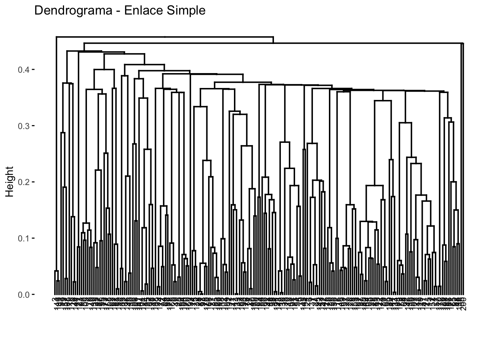
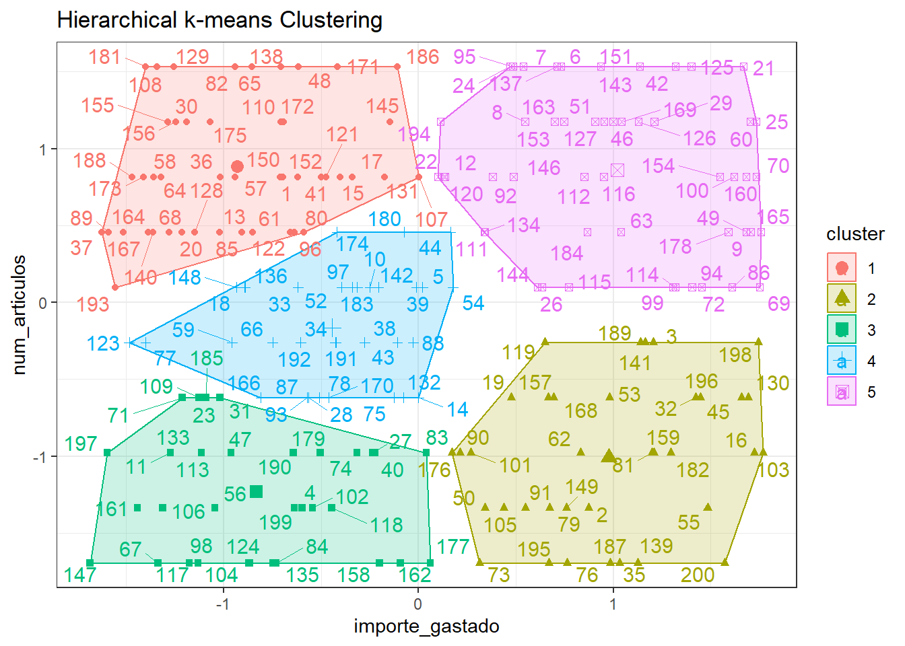
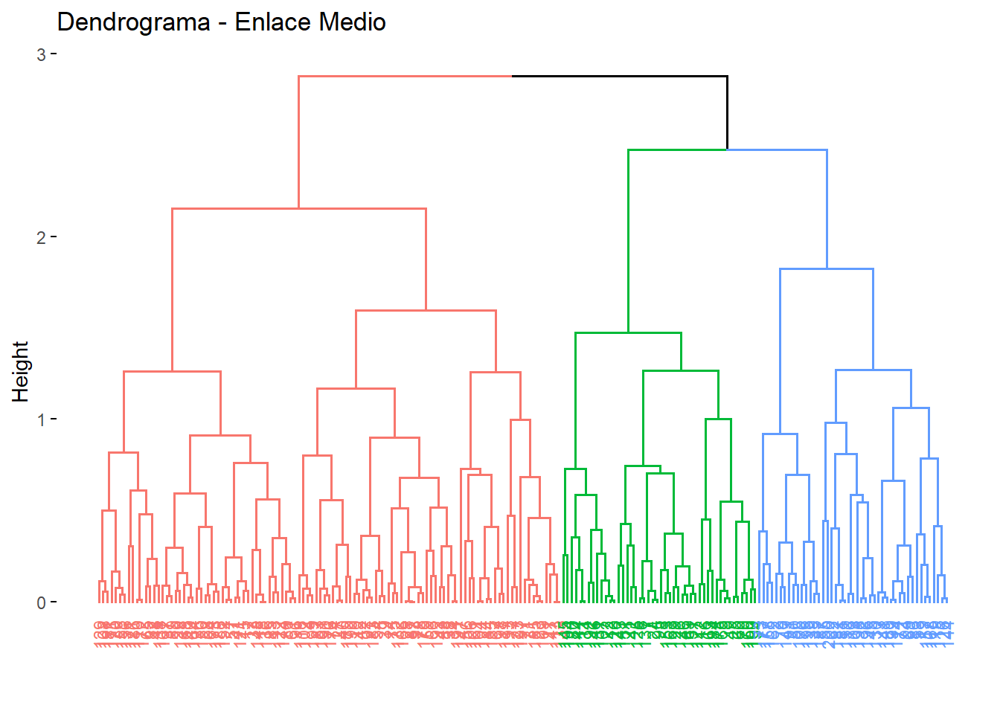
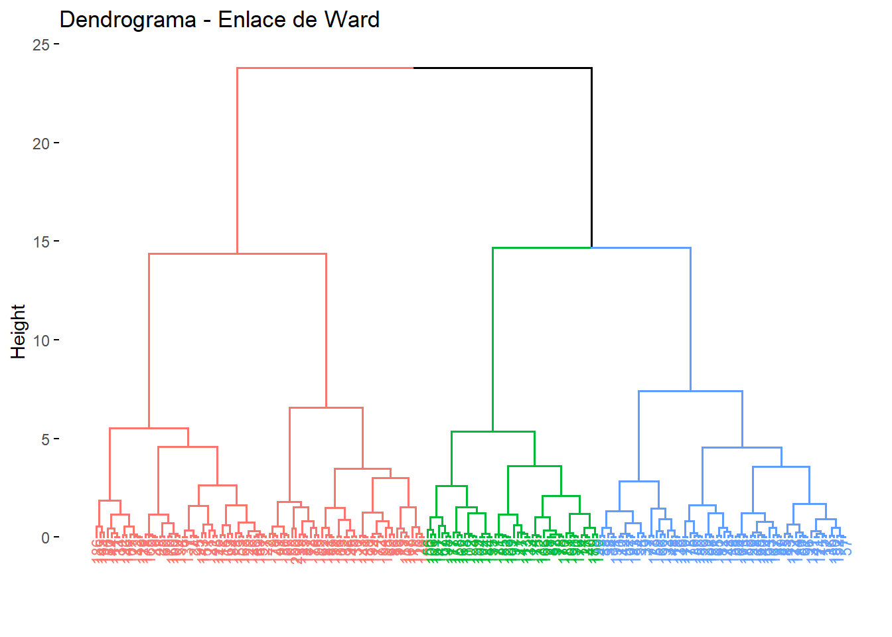
Evaluemos hasta qué punto su estructura refleja las distancias originales entre observaciones con el coeficiente de correlación entre las distancias cophenetic del dendrograma (altura de los nodos) y la matriz de distancias original:
cor(x = matriz_distancias2, cophenetic(hc_manhattan_simple))[1] 0.3945775cor(x = matriz_distancias2, cophenetic(hc_manhattan_completo))[1] 0.6086569cor(x = matriz_distancias2, cophenetic(hc_manhattan_medio))[1] 0.6383726cor(x = matriz_distancias2, cophenetic(hc_manhattan_ward))[1] 0.6333568Ahora tenemos que decidir a qué altura cortamos para generar los clusters. La función cutree() nos devuelve el cluster al que se ha asignado cada observación dependiendo del número de clusters especificado.
Una forma visual de comprobar los errores en las asignaciones es indicando en el argumento labels el grupo real al que pertenece cada observación. Si la agrupación resultante coincide con los grupos reales, entonces, dentro de cada clusters las labels serán las mismas.
Alimentos Electrónica Hogar Juguetes Ropa
1 23 24 16 23 23
2 10 6 12 8 9
3 4 16 6 12 8Como la magnitud de los valores difiere notablemente entre variables, las hemos escalado. Apliquemos el método de clustering jerárquico aglomerativo. Para ello debemos escoger una medida de distancia y un tipo de enlace.
Como tenemos una variable cuantitativa discreta y otra variable cuantitativa continua la distancia más adecuada será la Manhattan. En este caso, consideramos que es mejor que la euclídea puesto que esta última está pensada para variables cuantitativas continuas.
Además, hemos considerado distintos enlaces (simple, completo, medio y de Ward) y hemos evaluado hasta qué punto su estructura refleja las distancias originales entre observaciones con el coeficiente de correlación entre las distancias cophenetic del dendrograma (altura de los nodos) y la matriz de distancias original. Hemos concluido que el enlace más adecuado es el enlace medio, con el coeficiente más alto.
Representemos el dendograma. Recordemos que por el método del codo hemos obtenido 3 clusters.
Notamos que el primer cluster tiene muchos más elementos que los otros dos.
Veamos cómo ha quedado la clasificación.
Alimentos Electrónica Hogar Juguetes Ropa Sum
1 23 24 16 23 23 109
2 10 6 12 8 9 45
3 4 16 6 12 8 46
Sum 37 46 34 43 40 200Interpretamos la clasificación.
Veamos, para cada categoría, cómo está repartida en los tres clusters. ¿En qué cluster se encuentra principalmente?
Alimentos Electrónica Hogar Juguetes Ropa
1 0.62 0.52 0.47 0.53 0.58
2 0.27 0.13 0.35 0.19 0.22
3 0.11 0.35 0.18 0.28 0.20El máximo de elementos de cada categoría queda clasificado en el cluster 1, lo cual es coherente con el hecho de que el primer cluster tiene muchos más elementos que los otros dos.
En segundo lugar, alimentos, hogar y ropa están tienen más observaciones en el cluster 2 que en el 3.
Y electrónica y juguetes tienenmás observaciones en el cluster 3 que en el 2.
Veamos dentro de cada cluster qué categoría pesa más.
Alimentos Electrónica Hogar Juguetes Ropa
1 0.21 0.22 0.15 0.21 0.21
2 0.22 0.13 0.27 0.18 0.20
3 0.09 0.35 0.13 0.26 0.17El cluster 1 está muy equilibrado por categorías. El cluster 2 contiene principalmente hogar. El cluster 3 contiene principalmente electrónica seguido de juguetes.
Así, hemos obtenido una clasificación que interpretamos así:
Cluster sin categoría destacable donde residen la mayoría de observaciones.
Cluster principalmente de hogar y, con menor representación, alimentación y ropa.
Cluster principalmente de electrónica y juguetes.
Observamos ahora las medianas de los datos por cada cluster:
# A tibble: 3 × 3
`cutree(hc_manhattan_medio, k = 3)` mediana_importe mediana_articulos
<int> <dbl> <dbl>
1 1 172. 6
2 2 403. 3
3 3 384. 8.5Analizamos las características principales de cada clúster:
Cluster 1: Mediana de importe de gasto \(171.85\) con mediana de artículos \(6\). Es el cluster con mediana de gasto más baja y mediana de número de artículos considerable, conteniendo así observaciones económicas.
Cluster 2: Mediana de importe de gasto \(402.78\) con mediana de artículos \(3\). Es el cluster con mediana de gasto más alta y menor mediana número de artículos. Por lo tanto, contiene artículos caros, lo cual es coherente con el hecho de que contiene principalmente artículos del hogar.
Cluster 3: Mediana de importe de gasto \(383.765\) con mediana de artículos \(8.5\). Es el cluster con mayor mediana de número de artículos y su mediana de gasto está entre las otras dos medianas, aunque más cercana a la alta. Recordemos que este cluster está principalmente representado por electrónica y juguetes.
Como no hemos obtenido una clasificación satisfactoria por categorías –que tal vez no exista–, vamos a aplicar el métodos de clustering K-medoide (que en este caso tiene más sentido que el K-means porque tenemos una variable cuantitativa discreta). Compararemos la clasificación obtenida con la del jerárquico aglomerativo.
Usamos la misma distancia que antes: Manhattan. Representamos el clustering k-medoides con Manhattan.
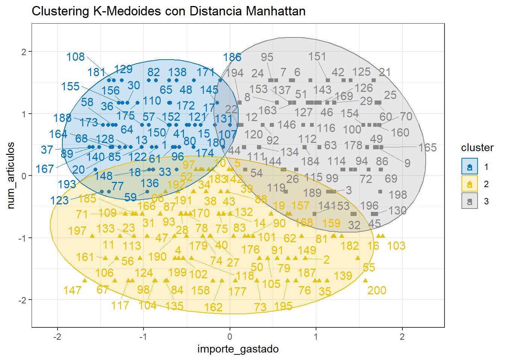
Veamos cómo ha quedado la clasificación.
Alimentos Electrónica Hogar Juguetes Ropa Sum
1 9 11 5 20 10 55
2 20 17 16 12 18 83
3 8 18 13 11 12 62
Sum 37 46 34 43 40 200Interpretamos la clasificación. Esta vez la cantidad de elementos en cada cluster está más equilibrada.
Veamos, para cada categoría, cómo está repartida en los tres clusters. ¿En qué cluster tienen más observaciones?
Alimentos Electrónica Hogar Juguetes Ropa
1 0.24 0.24 0.15 0.47 0.25
2 0.54 0.37 0.47 0.28 0.45
3 0.22 0.39 0.38 0.26 0.30Alimentos, hogar y ropa tienen su máximo en el cluster 2. Juguetes tiene su máximo en el cluster 1 y electrónica tiene su máximo en el cluster 3.
Veamos dentro de cada cluster qué categoría pesa más.
Alimentos Electrónica Hogar Juguetes Ropa
1 0.16 0.20 0.09 0.36 0.18
2 0.24 0.20 0.19 0.14 0.22
3 0.13 0.29 0.21 0.18 0.19El cluster 1 está mayoritariamente representado por juguetes y el cluster 3 tiene sobretot electrónica.
Observamos ahora las medianas de los datos por cada cluster:
# A tibble: 3 × 3
`pam_cluster$clustering` mediana_importe mediana_articulos
<int> <dbl> <dbl>
1 1 148. 8
2 2 233. 3
3 3 404. 8Analizamos las características principales de cada clúster:
Cluster 1: Mediana de importe de gasto \(147.76\) con mediana de artículos \(8\). Es el cluster con mediana de gasto más baja, conteniendo así observaciones económicas. Recordemos que este cluster está principalmente representado por juguetes.
Cluster 2: Mediana de importe de gasto \(232.97\) con mediana de artículos \(3\). Este cluster tiene la menor mediana de número de artículos. Recordemos que este cluster lo asociamos principalmente a alimentos, ropa y hogar.
Cluster 3: Mediana de importe de gasto \(403.84\) con mediana de artículos \(8\). Es el cluster con mayor mediana de número de artículos y mayor mediana de gasto. Recordemos que este cluster está principalmente representado por electrónica.
En resumen, se pretendre ofrecer una segmentación de los clientes según su comportamiento de compra. Nos interesa la variable categoría.
Por una parte, del jerárquico hemos obtenido una clasificación que interpretamos así:
Cluster sin categoría destacable donde residen la mayoría de observaciones.
Cluster principalmente de hogar y, con menor representación, alimentación y ropa.
Cluster principalmente de electrónica y juguetes.
Por otra parte, del K-medoides hemos obtenido una clasificación que interpretamos así:
Cluster de juguetes.
Cluster de alimentos, hogar y ropa.
Cluster de electrónica.
Recordemos que teníamos dos propuestas de partición y que con el método del codo hemos decidido que haya 3 clusters. Las dos propuestas eran:
Hogar.
Electrónica y juguetes.
Alimentos y ropa.
Alimentos, hogar y ropa.
Electrónica y juguetes.
El problema del jerárquico es que el cluster en que no destaca ninguna categoría en concreto no interesa para segmentar a los clientes.
Los clusters del K-medoides, en cambio, sí que son adecuados para la interpretación por categorías. Respetan la idea que alimentación, hogar y ropa debe ir separado de eletrónica y juguetes. Además, las categorías quedan bien separadas según en qué cluster tienen el máximo de obersvaciones.
Así, el algoritmo K-medoides ha demostrado ofrecer mejores resultados a la hora de interpretarlos por categorías.
Como hemos visto en las secciones anteriores, el algoritmo k-medoides ha demostrado ofrecer mejores resultados. Para validar este comportamiento, realizaremos una simulación dividiendo los datos en dos partes: utilizaremos el 80% de los datos para entrenar el modelo de k-medoides y el 20% restante se empleará como conjunto de prueba.
En esta etapa de evaluación, compararemos las predicciones generadas por el modelo con la clasificación original de los datos, lo que nos permitirá medir su precisión y rendimiento.
Separamos el conjunto de datos:
set.seed(124)
data <- raw_data_numeric
train_index <- createDataPartition(1:nrow(data), p = 0.8, list = FALSE)
train_data <- data[train_index, ]
test_data <- data[-train_index, ]
test_labels <- pam_cluster$clustering[-train_index]Entrenamos el modelo:
k <- 3
kmedoids_model <- pam(train_data, k)
print(kmedoids_model)Medoids:
ID importe_gastado num_articulos
[1,] 47 -0.7082749 0.8162454
[2,] 143 -0.5032529 -0.9777005
[3,] 52 1.0386139 0.4574562
Clustering vector:
[1] 1 2 3 2 1 3 3 3 3 1 2 1 1 1 1 3 1 2 3 3 2 2 3 1 2 3 1 2 1 2 1 2 3 2 3 3 3
[38] 2 3 2 3 1 3 3 3 2 1 2 3 1 2 3 1 2 1 3 3 2 2 2 2 2 1 3 1 2 2 1 3 2 1 2 2 2
[75] 3 3 1 1 2 3 2 2 3 2 2 1 2 1 3 3 2 3 3 2 3 1 1 1 2 2 3 3 3 1 1 3 1 2 3 1 3
[112] 1 1 1 3 1 3 2 1 1 1 3 3 1 1 3 2 3 3 2 3 1 2 1 3 3 2 1 1 2 2 3 2 1 1 1 3 2
[149] 1 1 2 2 2 1 1 2 3 2 3 2
Objective function:
build swap
0.8369517 0.7599562
Available components:
[1] "medoids" "id.med" "clustering" "objective" "isolation"
[6] "clusinfo" "silinfo" "diss" "call" "data" Aplicamos el modelo al conjunto de prueba:
medoids <- kmedoids_model$medoids
dist_test <- apply(test_data, 1, function(x) {
apply(medoids, 1, function(y) sum(abs(x - y))) # Distancia Manhattan
})
test_clusters <- apply(dist_test, 2, which.min)Comparamos los resultados del modelo con los reales:
cluster_factor <- factor(test_clusters, levels = 1:k)
sum(cluster_factor == test_labels)[1] 35Concluimos que para esta simulación el modelo ha acertado 35 veces de 40.